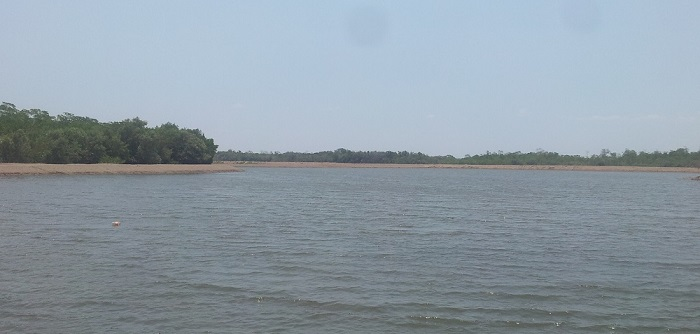
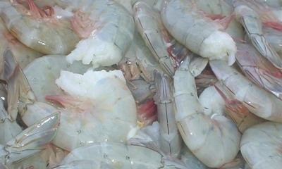
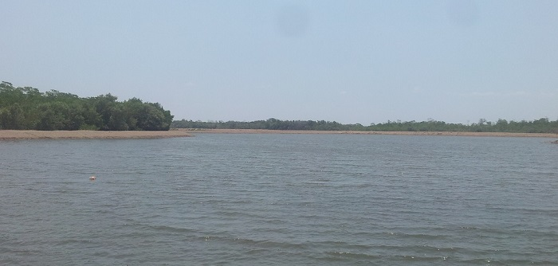
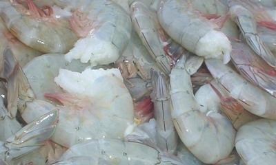

Lo mejor de mañana comienza hoy...
Camarón
Descripción del producto:
Ofrecemos al mercado internacional un camarón de excelente calidad, siendo capaces de elaborar cualquier valor agregado que solicite el cliente: “Head On, I.Q.F, P&D, PUD, Rings, Tail On, Mariposa, Chuzos, etc., gracias a nuestras modernas instalaciones con tecnología renovada.
El 96% de nuestro camarón es “Penaeus Vannamei”, que además de su sabor insuperable es el que mejor crecimiento y rendimiento tiene en nuestras costas ecuatorianas. El 4% restante es de otras variedades como por ejemplo el “Protrachypenaeus precipua” o el “Xiphopenaeus riveti” comúnmente conocidos como “pomada” o “titi” respectivamente, para satisfacer el requerimiento de algunos de nuestros clientes.
La calidad de nuestro producto es garantizada por el cuidadoso monitereo que se da desde la siembra del nauplio en nuestro laboratorio de larvas hasta el momento que es cosechado en nuestras piscinas, pasando por el transporte en nuestros camiones refrigerados y llegando en apenas dos horas a nuestra empacadora. En todo este proceso no se rompe ni un solo instante la cadena de frío, hasta que es congelado y posteriormente distribuido al consumidor final quien lo recibe con el máximo grado de frescura.
Nuestras Granjas
Actualmente NEGOCIOS CABELLOS (NEGOCIOSCABELLOS S.A), posee 30 piscinas hábiles que corresponden a 800 hectáreas de tierra, aproximadamente 600 has. de espejo de agua. La profundidad de las piscinas varía entre 0,60 y 1,2 metros promedio. Cuenta con 12 trabajadores de campo, 3 guardias, 1 Ingeniero en Biología Marina y 1 ayudante de biólogo.
Siembra:
Al llegar la larva a la camaronera es sembrada en la piscina buscando el agua fresca y el oxigeno.El periodo de producción desde su inicio (llegada de la larva a piscinas) hasta la cosecha es de aproximadamente 4 meses, en el que se obtiene un camarón de 14 gramos promedio. En invierno el periodo se acorta, respecto al verano debido a la alta temperatura en el agua. Dependiendo de los pedidos si se requiera camarón más grande, tomaría 1-2 meses llegando a un promedio de cultivo de 4 meses.
Alimentación:
No se alimenta el camarón con ningún tipo de balanceado, solamente con diatomeas (una variedad de fitoplancton) que se desarrolla gracias a la fertilización antes detallada.Muestreos
Se hacen muestreos todas las semanas, en donde se chequea al camarón y se hacen los pesos respectivos. Estos muestreos empiezan después de los 30 días de sembrada la piscina.
Cosecha:
Una vez cumplido el ciclo de producción; se prepara la piscina para su cosecha.Para ello se establecen parámetros de calidad y especificaciones de clientes.Por lo general se las pescas se realizan en aguajes, ya que el camarón se encuentra en plena actividad; sin embargo para fijar el momento preciso, se realiza un muestreo de camarones en donde se determina:
• Textura
• Tamaño
• Prueba de sabor
y otros aspectos del camarón (dependiendo del cliente)
.
 


